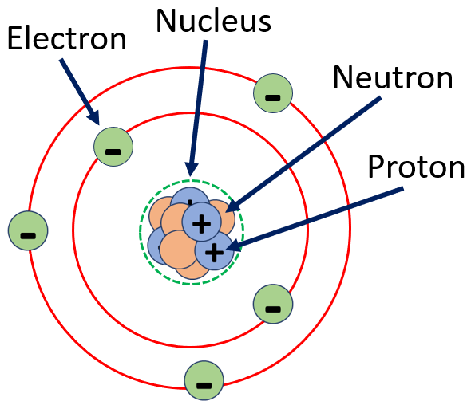

HOME BLOG EBOOKS ABOUT CONTACT SHOP
Have you ever wondered what Electricity is and where it comes from? To answer these questions, we have to start with the atom.
Everything in the universe is made of atoms and every atom consists of 3 types of particles; neutrons, protons and electrons. Neutrons and protons are packed together in the nucleus and make up the center of an atom, whereas the electrons move around the nucleus in a constant motion. For this discussion, we are only concerned about protons and electrons or more specifically, a property these two particles possess called the Electric Charge. Although it is very unlikely you’ll ever come across a proper definition for charge, the best we can come up with is, that charge is a form of electrical energy. Protons have a positive charge and Electrons have a negative charge. In a normal atom, the number of protons is equal to the number of electrons and thus the atom as a whole is electrically neutral.

Now, in the above figure you can notice that the electrons move in orbits around the nucleus, much like the motion of planets around the sun. This is where it gets interesting. The electrons closer to the nucleus are tightly bound to it and all they can do is to keep revolving around the nucleus. But the electrons further away from the nucleus, called the Valence electrons, are weakly bound and therefore they can get excited if external energy is provided to them.
These valence electrons upon gaining the sufficient energy from an external source can overcome the attractive force of the nucleus and become free electrons. Thereby causing an imbalance of positive and negative charges and creating a net charge on the object. In certain substances like metals, the valence electrons are so weakly bound that they become free electrons even due to the thermal energy from the environment. Similarly, free electrons can lose energy and once again fall into the attractive region of an atom.
Atoms which have more or less no. of electrons than the no. of protons are called Ions. If electrons are removed from a neutral object, then it becomes positively charged (positive ion) and if electrons are supplied to a neutral object, then it becomes negatively charged (negative ion).
So do every substance have the same no. of valence electrons? No, that depends on their atomic structure. For example, a hydrogen atom has only 1 electron and this electron is very close to the nucleus. Therefore, exciting this electron is an impossible task under normal circumstances. On the other hand, in a copper atom, the outer electrons are significantly far away from the nucleus and therefore these become free electrons without muh effort.
Generally, substances which have a large number of free electrons at room temperature are called Conductors. And substances which have hardly any free electrons are called insulators. Then there are substances which have more free electrons than insulators, but lesser than conductors. Those substances are called Semi-Conductors.
The SI unit of electric charge is Coulomb (C) and it is the charge possessed by 6.24 x 1018 electrons.